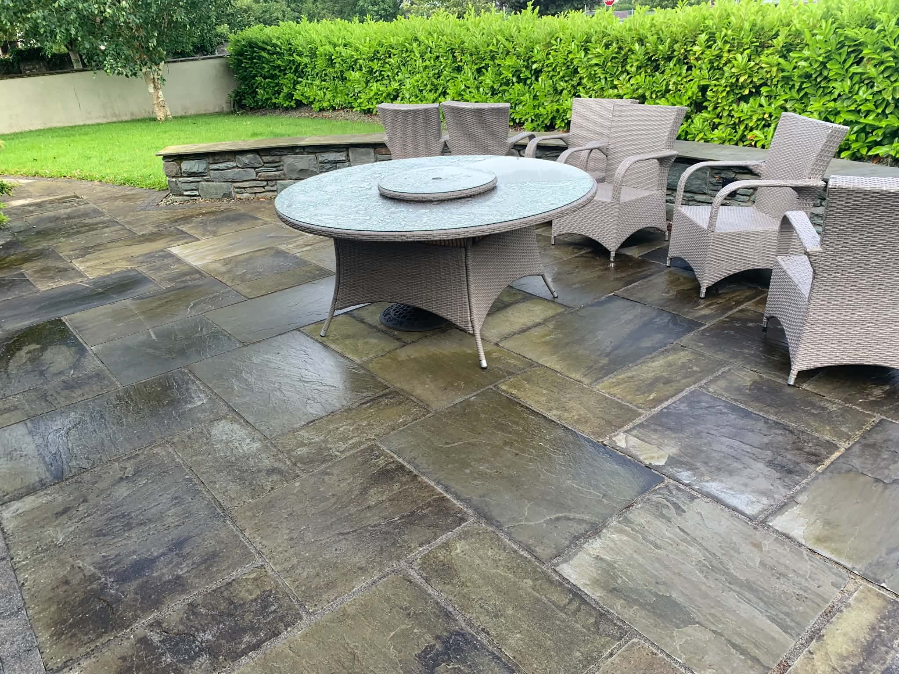
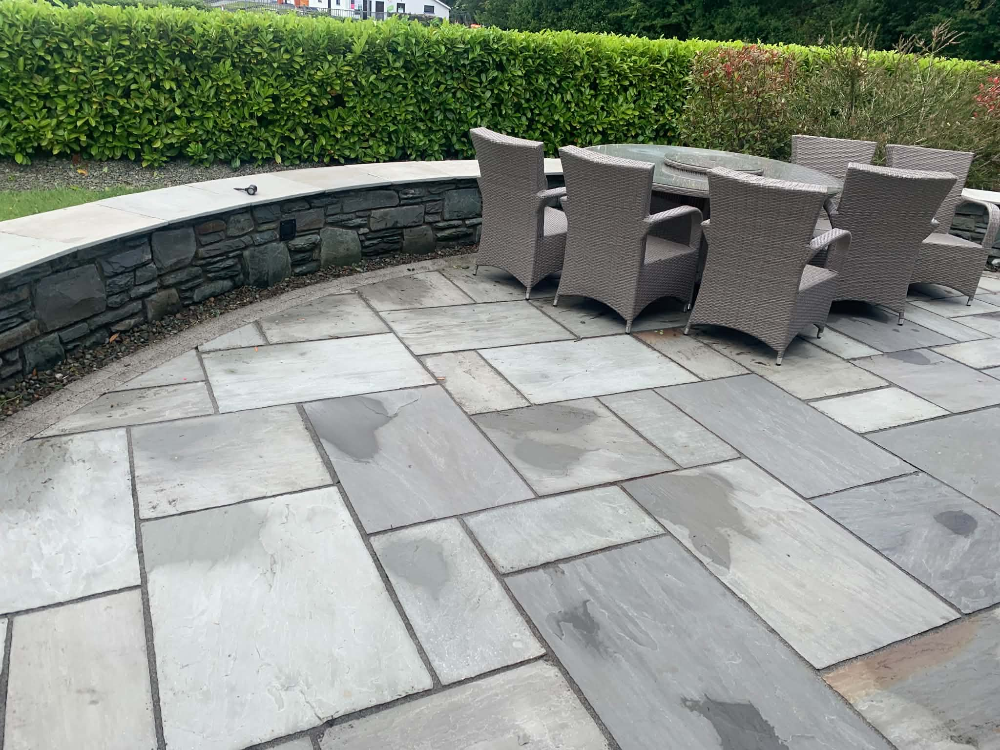
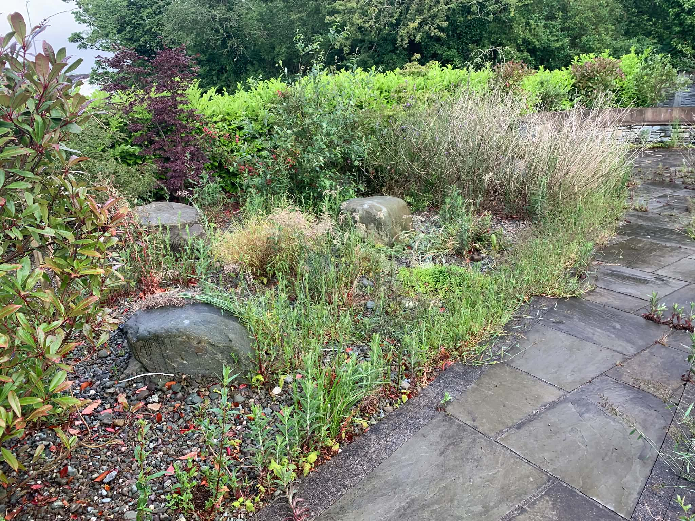
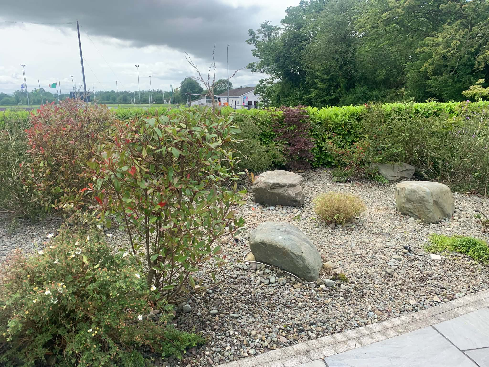

Cedar Landscapes
A Garden You
Can Enjoy Year-Round.
Reliable, considered garden maintenance that keeps every outdoor space healthy, tidy and welcoming.
View Our WorkCedar Landscapes
Reliable, considered garden maintenance that keeps every outdoor space healthy, tidy and welcoming.
View Our WorkOur Maintenance Service
Whether your garden needs a seasonal refresh or regular professional attention, we take care of the details so you can enjoy the results.
Recent Projects










Start Your Project